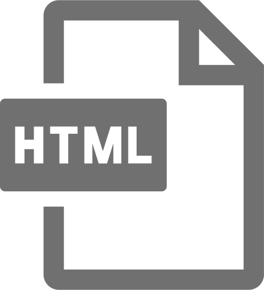
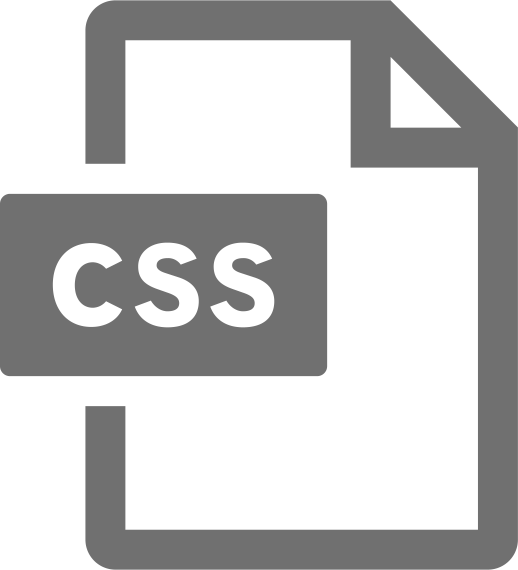

菊池 百里子（きくち ゆりこ）
WEBデザイナー
1990年8月25日生まれ
愛媛県出身生まれ。
Background
-
2009年4月
関西大学経済学部入学
焼肉屋で初めてのアルバイトを経験
-
2010年4月
カナダへ1年間の語学留学
カナダAlgoma大学へ語学留学。英語、経済学、心理学、民族学を学ぶ。
-
2013年4月
株式会社ラストリゾート入社
「人生のきっかけに関わる」職種・業界を軸に就職活動。選択肢を提供し、決断を支援したい、との思いから、留学カウンセラーを経験。
-
2015年7月
カナダへ1年間の語学留学
語学学校の日本人カウンセラー職に従事。日本人生徒の募集、生徒の生活支援に勤める。
-
2016年9月
株式会社MS-Japan入社
人材紹介会社のキャリアアドバイザー、リクルーティングアドバイザー職に従事。主に経理・人事職などの管理部門職種の転職支援、大手上場企業や会計事務所等の採用支援に尽力。採用から企業・求職者の課題解決に取り組む。
-
2020年2月
東京デザインプレックス研究所入学
WEBデザインの基礎を学ぶ。
Vision
これまで、留学準備支援や海外生活支援、転職支援などで、決断のサポート・課題解決に尽力してきた。今後はWEBデザイナーとして、デザインでクライアントの”イメージを形にする”サポート、クライアントの課題解決を実現したい。
Skills
- 
- 
Strengths
イメージを引き出し具象化する力
クライアントとの対話から、あらゆる漠然としたイメージの実現に尽力してきました。真意に辿り着く為の質問力、目標設定、実行力を活かし、クライアントの課題解決の力になります。
マルチタスクと計画性
クライアントの目標達成の為、優先順位を決め、責任をもってサポートしてきました。人材紹介会社では、キャリアアドバイザーとして毎月新たに45〜55人の求職者とお会いし、年間約600人の転職サポートを行ってきました。日々の業務を整理し、短期・長期の計画を遂行する力があります。